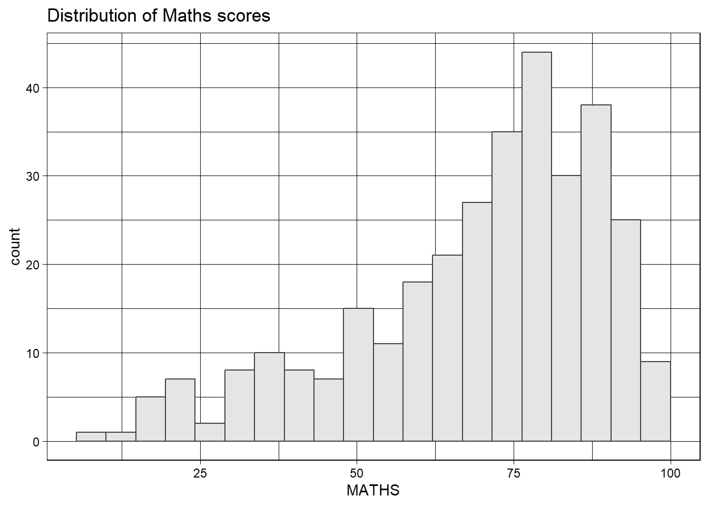
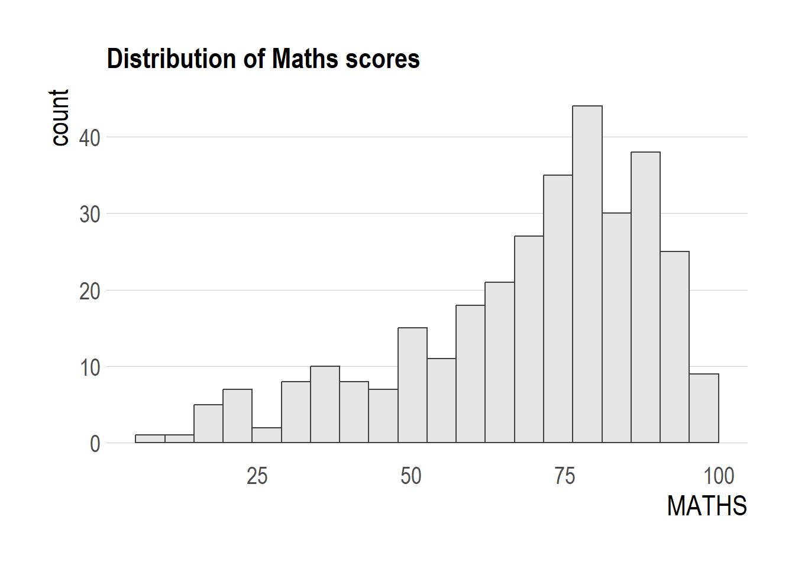
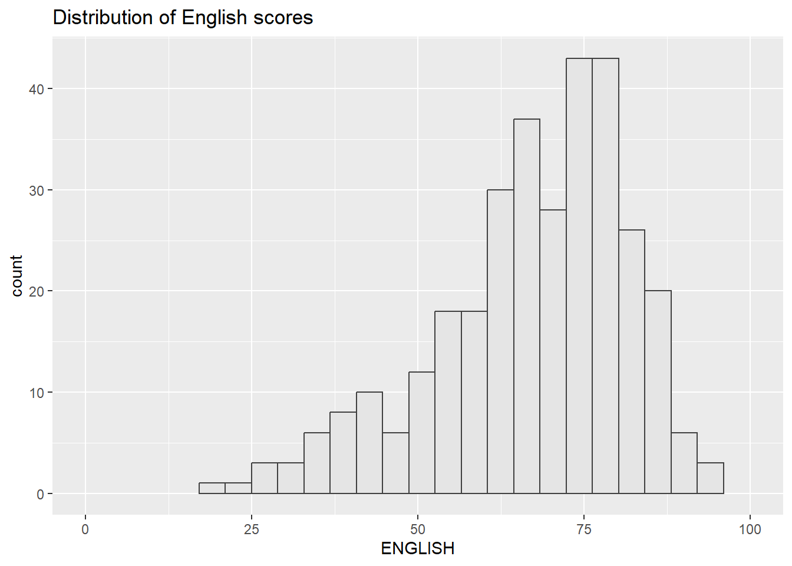
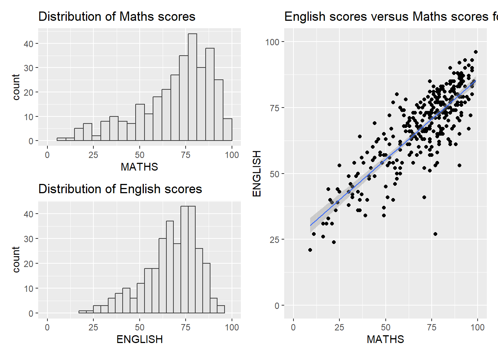
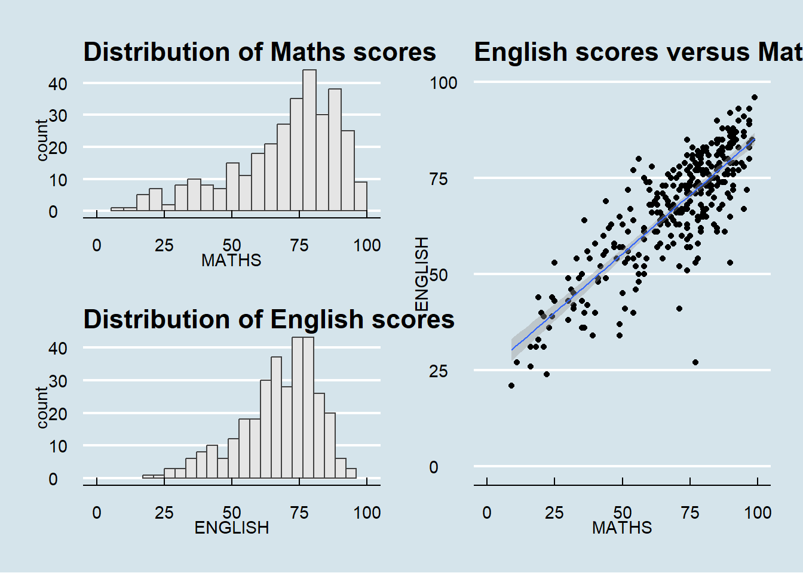
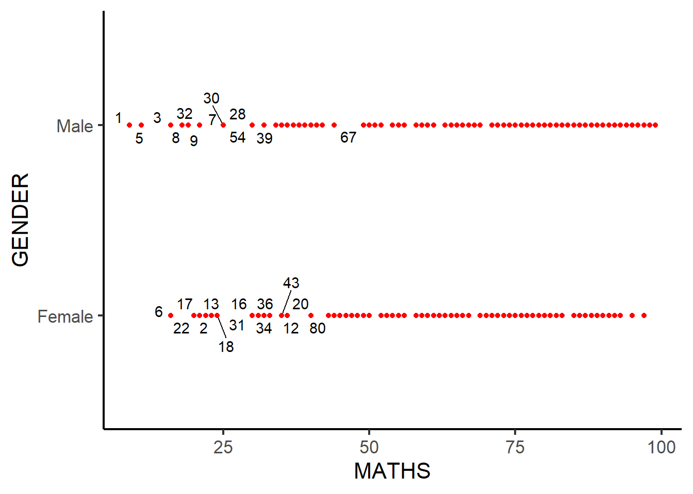

pacman::p_load(ggrepel, patchwork,
ggthemes, hrbrthemes,
tidyverse, extrafont)Hands_onExercise2
Load required packages including extrafont
Load fonts into memory (important for hrbrthemes)
extrafont::loadfonts(device = "win")Agency FB already registered with windowsFonts().Algerian already registered with windowsFonts().Ami R already registered with windowsFonts().Arial Black already registered with windowsFonts().Arial already registered with windowsFonts().Arial Narrow already registered with windowsFonts().Arial Rounded MT Bold already registered with windowsFonts().Bahnschrift already registered with windowsFonts().Baskerville Old Face already registered with windowsFonts().Bauhaus 93 already registered with windowsFonts().Bell MT already registered with windowsFonts().Berlin Sans FB already registered with windowsFonts().Berlin Sans FB Demi already registered with windowsFonts().Bernard MT Condensed already registered with windowsFonts().Blackadder ITC already registered with windowsFonts().Bodoni MT already registered with windowsFonts().Bodoni MT Black already registered with windowsFonts().Bodoni MT Condensed already registered with windowsFonts().Bodoni MT Poster Compressed already registered with windowsFonts().Book Antiqua already registered with windowsFonts().Bookman Old Style already registered with windowsFonts().Bookshelf Symbol 7 already registered with windowsFonts().Bradley Hand ITC already registered with windowsFonts().Britannic Bold already registered with windowsFonts().Broadway already registered with windowsFonts().Brush Script MT already registered with windowsFonts().Calibri already registered with windowsFonts().Calibri Light already registered with windowsFonts().Californian FB already registered with windowsFonts().Calisto MT already registered with windowsFonts().Cambria already registered with windowsFonts().Candara already registered with windowsFonts().Candara Light already registered with windowsFonts().Castellar already registered with windowsFonts().Centaur already registered with windowsFonts().Century already registered with windowsFonts().Century Gothic already registered with windowsFonts().Century Schoolbook already registered with windowsFonts().Chiller already registered with windowsFonts().Colonna MT already registered with windowsFonts().Comic Sans MS already registered with windowsFonts().Consolas already registered with windowsFonts().Constantia already registered with windowsFonts().Cooper Black already registered with windowsFonts().Copperplate Gothic Bold already registered with windowsFonts().Copperplate Gothic Light already registered with windowsFonts().Corbel already registered with windowsFonts().Corbel Light already registered with windowsFonts().Courier New already registered with windowsFonts().Curlz MT already registered with windowsFonts().Dubai already registered with windowsFonts().Dubai Light already registered with windowsFonts().Dubai Medium already registered with windowsFonts().Ebrima already registered with windowsFonts().Edwardian Script ITC already registered with windowsFonts().Elephant already registered with windowsFonts().Engravers MT already registered with windowsFonts().Eras Bold ITC already registered with windowsFonts().Eras Demi ITC already registered with windowsFonts().Eras Light ITC already registered with windowsFonts().Eras Medium ITC already registered with windowsFonts().Felix Titling already registered with windowsFonts().Footlight MT Light already registered with windowsFonts().Forte already registered with windowsFonts().Franklin Gothic Book already registered with windowsFonts().Franklin Gothic Demi already registered with windowsFonts().Franklin Gothic Demi Cond already registered with windowsFonts().Franklin Gothic Heavy already registered with windowsFonts().Franklin Gothic Medium already registered with windowsFonts().Franklin Gothic Medium Cond already registered with windowsFonts().Freestyle Script already registered with windowsFonts().French Script MT already registered with windowsFonts().FZShuTi already registered with windowsFonts().FZYaoTi already registered with windowsFonts().Gabriola already registered with windowsFonts().Gadugi already registered with windowsFonts().Garamond already registered with windowsFonts().Georgia already registered with windowsFonts().Gigi already registered with windowsFonts().Gill Sans Ultra Bold already registered with windowsFonts().Gill Sans Ultra Bold Condensed already registered with windowsFonts().Gill Sans MT already registered with windowsFonts().Gill Sans MT Condensed already registered with windowsFonts().Gill Sans MT Ext Condensed Bold already registered with windowsFonts().Gloucester MT Extra Condensed already registered with windowsFonts().Goudy Old Style already registered with windowsFonts().Goudy Stout already registered with windowsFonts().HYGraphic-Medium already registered with windowsFonts().HYGungSo-Bold already registered with windowsFonts().HYGothic-Extra already registered with windowsFonts().HYGothic-Medium already registered with windowsFonts().HYHeadLine-Medium already registered with windowsFonts().HYMyeongJo-Extra already registered with windowsFonts().HYSinMyeongJo-Medium already registered with windowsFonts().HYPMokGak-Bold already registered with windowsFonts().HYPost-Light already registered with windowsFonts().HYPost-Medium already registered with windowsFonts().HYShortSamul-Medium already registered with windowsFonts().Haettenschweiler already registered with windowsFonts().Harlow Solid Italic already registered with windowsFonts().Harrington already registered with windowsFonts().Headline R already registered with windowsFonts().High Tower Text already registered with windowsFonts().Impact already registered with windowsFonts().Imprint MT Shadow already registered with windowsFonts().Informal Roman already registered with windowsFonts().Ink Free already registered with windowsFonts().Javanese Text already registered with windowsFonts().Jokerman already registered with windowsFonts().Juice ITC already registered with windowsFonts().Kristen ITC already registered with windowsFonts().Kunstler Script already registered with windowsFonts().Wide Latin already registered with windowsFonts().Leelawadee UI already registered with windowsFonts().Leelawadee UI Semilight already registered with windowsFonts().LiSu already registered with windowsFonts().Lucida Bright already registered with windowsFonts().Lucida Calligraphy already registered with windowsFonts().Lucida Console already registered with windowsFonts().Lucida Fax already registered with windowsFonts().Lucida Handwriting already registered with windowsFonts().Lucida Sans already registered with windowsFonts().Lucida Sans Typewriter already registered with windowsFonts().Lucida Sans Unicode already registered with windowsFonts().Magic R already registered with windowsFonts().Magneto already registered with windowsFonts().Maiandra GD already registered with windowsFonts().Malgun Gothic already registered with windowsFonts().Malgun Gothic Semilight already registered with windowsFonts().Marlett already registered with windowsFonts().Matura MT Script Capitals already registered with windowsFonts().Microsoft Himalaya already registered with windowsFonts().Microsoft Yi Baiti already registered with windowsFonts().Microsoft New Tai Lue already registered with windowsFonts().Microsoft PhagsPa already registered with windowsFonts().Microsoft Sans Serif already registered with windowsFonts().Microsoft Tai Le already registered with windowsFonts().Mistral already registered with windowsFonts().Modern No. 20 already registered with windowsFonts().Mongolian Baiti already registered with windowsFonts().Monotype Corsiva already registered with windowsFonts().MS Outlook already registered with windowsFonts().MS Reference Sans Serif already registered with windowsFonts().MS Reference Specialty already registered with windowsFonts().MT Extra already registered with windowsFonts().MV Boli already registered with windowsFonts().Myanmar Text already registered with windowsFonts().New Gulim already registered with windowsFonts().Niagara Engraved already registered with windowsFonts().Niagara Solid already registered with windowsFonts().OCR A Extended already registered with windowsFonts().Old English Text MT already registered with windowsFonts().Onyx already registered with windowsFonts().Palace Script MT already registered with windowsFonts().Palatino Linotype already registered with windowsFonts().Papyrus already registered with windowsFonts().Parchment already registered with windowsFonts().Perpetua already registered with windowsFonts().Perpetua Titling MT already registered with windowsFonts().Playbill already registered with windowsFonts().Poor Richard already registered with windowsFonts().Pristina already registered with windowsFonts().Pyunji R already registered with windowsFonts().Rage Italic already registered with windowsFonts().Ravie already registered with windowsFonts().Rockwell already registered with windowsFonts().Rockwell Condensed already registered with windowsFonts().Rockwell Extra Bold already registered with windowsFonts().Sans Serif Collection already registered with windowsFonts().Script MT Bold already registered with windowsFonts().Segoe Fluent Icons already registered with windowsFonts().Segoe MDL2 Assets already registered with windowsFonts().Segoe Print already registered with windowsFonts().Segoe Script already registered with windowsFonts().Segoe UI already registered with windowsFonts().Segoe UI Light already registered with windowsFonts().Segoe UI Semibold already registered with windowsFonts().Segoe UI Semilight already registered with windowsFonts().Segoe UI Black already registered with windowsFonts().Segoe UI Emoji already registered with windowsFonts().Segoe UI Historic already registered with windowsFonts().Segoe UI Symbol already registered with windowsFonts().Segoe UI Variable already registered with windowsFonts().Showcard Gothic already registered with windowsFonts().SimSun-ExtB already registered with windowsFonts().SimSun-ExtG already registered with windowsFonts().Sitka Text already registered with windowsFonts().Snap ITC already registered with windowsFonts().STCaiyun already registered with windowsFonts().Stencil already registered with windowsFonts().STFangsong already registered with windowsFonts().STHupo already registered with windowsFonts().STKaiti already registered with windowsFonts().STLiti already registered with windowsFonts().STSong already registered with windowsFonts().STXihei already registered with windowsFonts().STXingkai already registered with windowsFonts().STXinwei already registered with windowsFonts().STZhongsong already registered with windowsFonts().Sylfaen already registered with windowsFonts().Symbol already registered with windowsFonts().Tahoma already registered with windowsFonts().Tempus Sans ITC already registered with windowsFonts().Times New Roman already registered with windowsFonts().Trebuchet MS already registered with windowsFonts().Tw Cen MT already registered with windowsFonts().Tw Cen MT Condensed already registered with windowsFonts().Tw Cen MT Condensed Extra Bold already registered with windowsFonts().Verdana already registered with windowsFonts().Viner Hand ITC already registered with windowsFonts().Vivaldi already registered with windowsFonts().Vladimir Script already registered with windowsFonts().Webdings already registered with windowsFonts().Wingdings already registered with windowsFonts().Wingdings 2 already registered with windowsFonts().Wingdings 3 already registered with windowsFonts().Yet R already registered with windowsFonts().YouYuan already registered with windowsFonts().#2 Beyond ggplot2 Fundamentals ##2.2 Getting started ###2.2.1 Installing and loading the required libraries
pacman::p_load(ggrepel, patchwork,
ggthemes, hrbrthemes,
tidyverse) ###2.2.2 Importing data
exam_data <- read_csv("C:\\RBSantigari-MITB\\ISSS608-VAA\\HandsonExercise\\Hands_onExercise2\\data\\Exam_data (1).csv")Rows: 322 Columns: 7
── Column specification ────────────────────────────────────────────────────────
Delimiter: ","
chr (4): ID, CLASS, GENDER, RACE
dbl (3): ENGLISH, MATHS, SCIENCE
ℹ Use `spec()` to retrieve the full column specification for this data.
ℹ Specify the column types or set `show_col_types = FALSE` to quiet this message.##2.3 Beyond ggplot2 Annotation: ggrepel
ggplot(data=exam_data,
aes(x= MATHS,
y=ENGLISH)) +
geom_point() +
geom_smooth(method=lm,
size=0.5) +
geom_label(aes(label = ID),
hjust = .5,
vjust = -.5) +
coord_cartesian(xlim=c(0,100),
ylim=c(0,100)) +
ggtitle("English scores versus Maths scores for Primary 3")Warning: Using `size` aesthetic for lines was deprecated in ggplot2 3.4.0.
ℹ Please use `linewidth` instead.`geom_smooth()` using formula = 'y ~ x'
###2.3.1 Working with ggrepel
ggplot(data=exam_data,
aes(x= MATHS,
y=ENGLISH)) +
geom_point() +
geom_smooth(method=lm,
size=0.5) +
geom_label_repel(aes(label = ID),
fontface = "bold") +
coord_cartesian(xlim=c(0,100),
ylim=c(0,100)) +
ggtitle("English scores versus Maths scores for Primary 3")`geom_smooth()` using formula = 'y ~ x'Warning: ggrepel: 317 unlabeled data points (too many overlaps). Consider
increasing max.overlaps##2.4 Beyond ggplot2 Themes
ggplot(data=exam_data,
aes(x = MATHS)) +
geom_histogram(bins=20,
boundary = 100,
color="grey25",
fill="grey90") +
theme_gray() +
ggtitle("Distribution of Maths scores") 
ggplot(data=exam_data,
aes(x = MATHS)) +
geom_histogram(bins=20,
boundary = 100,
color="grey25",
fill="grey90") +
theme_linedraw()+
ggtitle("Distribution of Maths scores") 
ggplot(data=exam_data,
aes(x = MATHS)) +
geom_histogram(bins=20,
boundary = 100,
color="grey25",
fill="grey90") +
theme_classic() +
ggtitle("Distribution of Maths scores") ggplot(data=exam_data,
aes(x = MATHS)) +
geom_histogram(bins=20,
boundary = 100,
color="grey25",
fill="grey90") +
theme_dark() +
ggtitle("Distribution of Maths scores") 
###2.4.1 Working with ggtheme package
ggplot(data=exam_data,
aes(x = MATHS)) +
geom_histogram(bins=20,
boundary = 100,
color="grey25",
fill="grey90") +
ggtitle("Distribution of Maths scores") +
theme_economist()
###2.4.2 Working with hrbthems package
ggplot(data=exam_data,
aes(x = MATHS)) +
geom_histogram(bins=20,
boundary = 100,
color="grey25",
fill="grey90") +
ggtitle("Distribution of Maths scores") +
theme_ipsum()
ggplot(data=exam_data,
aes(x = MATHS)) +
geom_histogram(bins=20,
boundary = 100,
color="grey25",
fill="grey90") +
ggtitle("Distribution of Maths scores") +
theme_ipsum(axis_title_size = 18,
base_size = 15,
grid = "Y")
##2.5 Beyond Single Graph ## 2.5 Beyond Single Graph ###Distribution of Maths score
p1 <- ggplot(data = exam_data,
aes(x = MATHS)) +
geom_histogram(bins = 20,
boundary = 100,
color = "grey25",
fill = "grey90") +
coord_cartesian(xlim = c(0, 100)) +
ggtitle("Distribution of Maths scores")
print(p1)
###Distribution of English score
p2 <- ggplot(data=exam_data,
aes(x = ENGLISH)) +
geom_histogram(bins=20,
boundary = 100,
color="grey25",
fill="grey90") +
coord_cartesian(xlim=c(0,100)) +
ggtitle("Distribution of English scores")
print(p2)
###scatterplot for English score versus Maths score
p3 <- ggplot(data=exam_data,
aes(x= MATHS,
y=ENGLISH)) +
geom_point() +
geom_smooth(method=lm,
size=0.5) +
coord_cartesian(xlim=c(0,100),
ylim=c(0,100)) +
ggtitle("English scores versus Maths scores for Primary 3")
print(p3)`geom_smooth()` using formula = 'y ~ x'
###2.5.1 Creating Composite Graphics: pathwork methods ###2.5.2 Combining two ggplot2 graphs
p1 + p2
###2.5.3 Combining three ggplot2 graphs
(p1 / p2) | p3`geom_smooth()` using formula = 'y ~ x'
###2.5.4 Creating a composite figure with tag
((p1 / p2) | p3) +
plot_annotation(tag_levels = 'I')`geom_smooth()` using formula = 'y ~ x'
###2.5.5 Creating figure with insert
p3 + inset_element(p2,
left = 0.02,
bottom = 0.7,
right = 0.5,
top = 1)`geom_smooth()` using formula = 'y ~ x'###2.5.6 Creating a composite figure by using patchwork and ggtheme
patchwork <- (p1 / p2) | p3
patchwork & theme_economist()`geom_smooth()` using formula = 'y ~ x'
Extra work
##(1)ggrepel provides geoms for ggplot2 to repel overlapping text labels:
library(ggrepel)
ggplot(exam_data, aes(MATHS, GENDER, label = rownames(exam_data))) +
geom_text_repel() +
geom_point(color = 'red') +
theme_classic(base_size = 16)Warning: ggrepel: 296 unlabeled data points (too many overlaps). Consider
increasing max.overlaps
###(2) plot for top scoring students
library(ggrepel)
exam_data %>%
ggplot(aes(x = MATHS, y = ENGLISH)) +
geom_point(color = "steelblue") +
geom_text_repel(aes(label = ifelse(MATHS > 90 | ENGLISH > 90, ID, "")),
size = 3, box.padding = 0.3) +
ggtitle("Top Scoring Students in Maths or English")Warning: ggrepel: 31 unlabeled data points (too many overlaps). Consider
increasing max.overlaps####(3) Combine plots
library(patchwork)
p1 <- ggplot(exam_data, aes(x = MATHS)) +
geom_histogram(bins = 20, fill = "lightblue") +
ggtitle("Maths")
p2 <- ggplot(exam_data, aes(x = ENGLISH)) +
geom_histogram(bins = 20, fill = "lightgreen") +
ggtitle("English")
p1 + p2 
###(4)English Score by Class and Gender
ggplot(exam_data, aes(x = CLASS, y = ENGLISH, fill = GENDER)) +
geom_bar(stat = "identity", position = "dodge") +
theme_minimal(base_size = 14) +
theme(axis.text.x = element_text(angle = 45, hjust = 1),
legend.position = "bottom") +
ggtitle("English Score by Class and Gender")
###(5)Compare subject-wise score distributions in a single view
library(patchwork)
p1 <- ggplot(exam_data, aes(x = ENGLISH)) +
geom_histogram(bins = 20, fill = "steelblue") +
ggtitle("English Scores")
p2 <- ggplot(exam_data, aes(x = MATHS)) +
geom_histogram(bins = 20, fill = "tomato") +
ggtitle("Maths Scores")
p3 <- ggplot(exam_data, aes(x = SCIENCE)) +
geom_histogram(bins = 20, fill = "darkgreen") +
ggtitle("Science Scores")
(p1 | p2) / p3